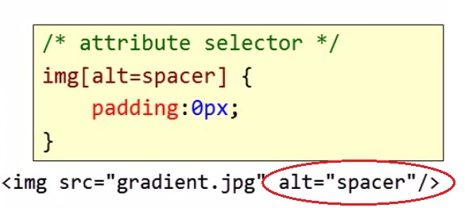

CSS3 In Depth
Other Selectors
- Descendant Selector

- Child Selector
- Attribute Selector

In questo esempio tutte le immagini che hanno l`attributo specificato (cerchiato in rosso) ricevono un padding pari a zero.
- Pseudo Class

In questo esempio tutti gli anchor già visitati ricevono il colore grigio chiaro.
- Star Selector

Seleziona tutti gli elementi della pagina e gli applica un attributo specifico. Nell`esempio di cui sopra applica a tutti gli elementi un colore di background giallo.
Styles From Different Sources

Come si vede dallo schema di cui sopra, vi sono tre fonti principali di stile: quella relativa al foglio/i compilato/i dall`autore, quella relativa al foglio di default del browser e quella relativa al foglio dell`utente. Se una stessa istruzione è presente in due o più fogli, la precedenza sarà allora la seguente:
- Author Stylesheets
- User Stylesheet
- Default Stylesheet
Se si vuole dare la precedenza ad un`istruzione che invece, per i motivi di cui sopra, viene esclusa, bisognerà allora utilizzare "!important" come nell`esempio di cui sotto.
Heading 1
Heading 2
A div
A paragraph
Refresh